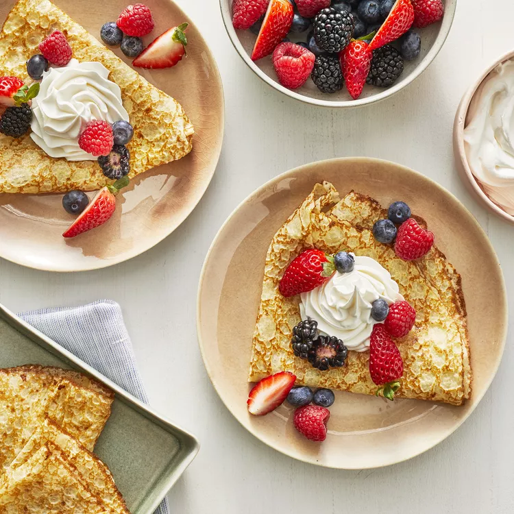

Crepes

Description
Perfect for a sweet breakfast treat, this simple crepe recipe is quick and easy, using nothing but common home kitchen ingredients.
Serves 4 - Total time: 30 mins
Ingredients
- 1 cup all-purpose flour
- 2 large eggs
- 1/2 cup milk
- 1/2 cup water
- 1/4 tsp salt
- 2 tbsp butter, melted
Steps
- Whisk flour and eggs together in a large mixing bowl; gradually add in milk and water, stirring to combine. Add salt and melted butter; beat until smooth.
- Heat a lightly oiled griddle or frying pan over medium-high heat. Pour or scoop the batter onto the griddle, using approximately 1/4 cup for each crêpe. Tilt the pan with a circular motion so that the batter coats the surface evenly.
- Cook until the top of the crêpe is no longer wet and the bottom has turned light brown, 1 to 2 minutes. Run a spatula around the edge of the skillet to loosen the crêpe; flip and cook until the other side has turned light brown, about 1 minute more. Serve hot.